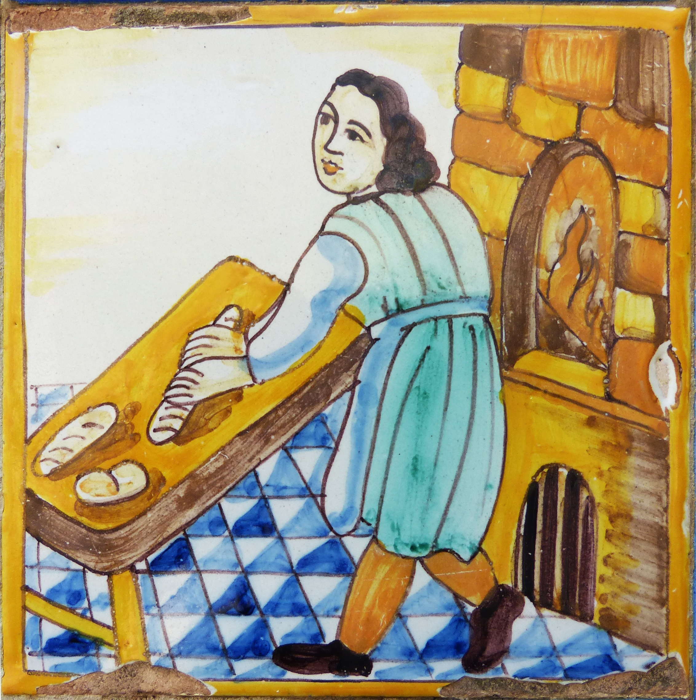

Una historia familiar
Más de 130 años haciendo las cosas con cariño.
Panadería de Marco nace de una tradición familiar transmitida durante cinco generaciones de panaderos.
Seguimos cuidando el oficio de siempre mientras compartimos nuestros productos con cada nueva generación.
Conoce nuestra historia